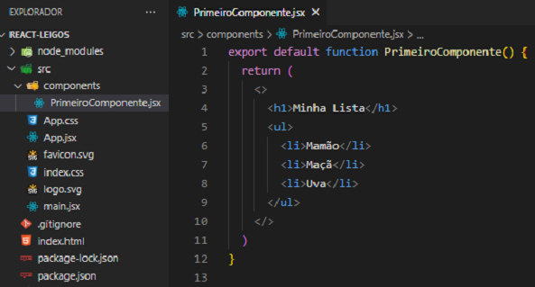
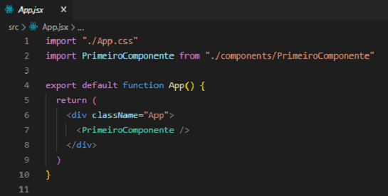
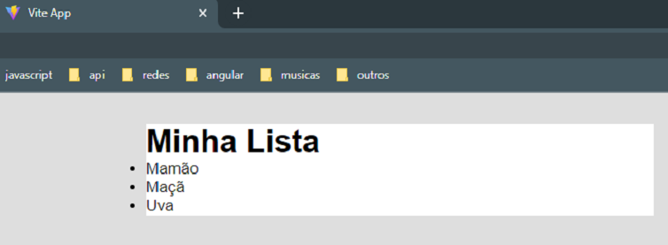

O conceito de Fragments nos permite criar um componente sem elemento pai.
A sua sintaxe é: <> <⁄>
O seu propósito é simplificar o código. Lembre-se que dentro do return somos obrigados a ter apenas um elemento pai, geralmente usamos a tag div. Para fazermos o uso dos Fragments trocaremos essa div pelos Fragments.

O arquivo App.jsx permace da seguinte forma:

No navegador temos:
